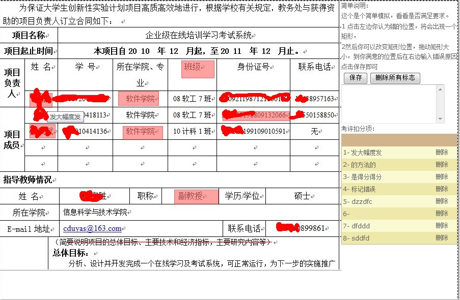
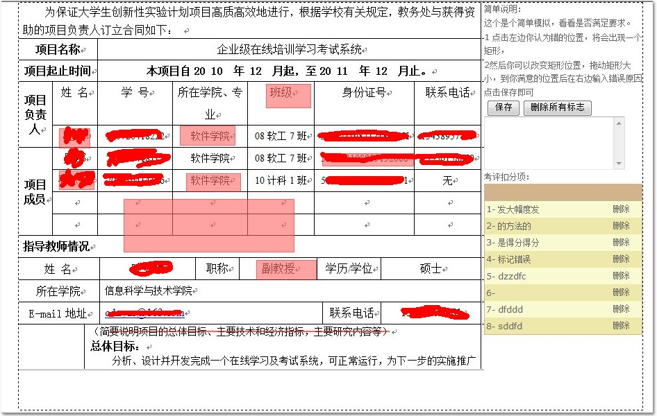
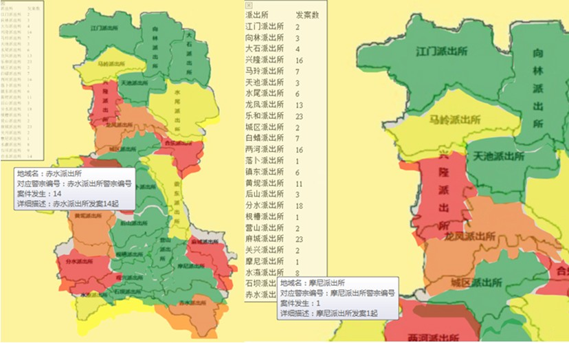
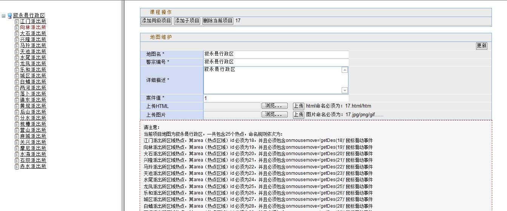
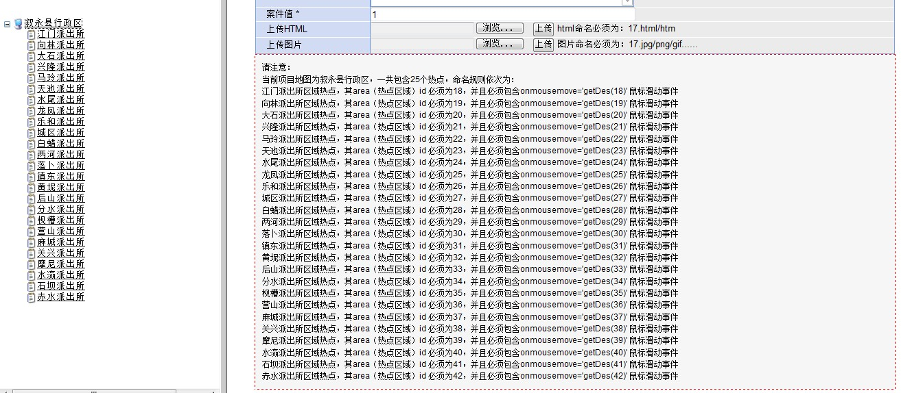
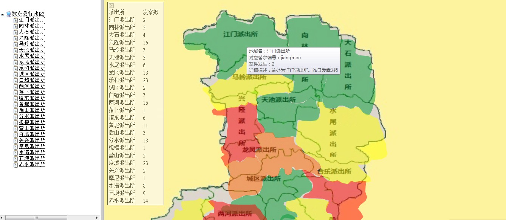

忘了一件事情！有经验的大哥，我想专研Web前端，请问前景如何呢？我查了下，还是 有点迷糊。有经验的大哥请指点下！
咳咳！恩，首先说一句，前段时间准备的招聘失败了，准备了一个多月.net以及数据库，结果大公司很少招.net不说，考的全部是数据结构，结果还没来得及复习。
其实就算是复习也不一定来得及，现在确实是有点悲剧。但是人总是要向前看，总是要活下去，确实没法便进小公司吧，照样会有一片天地的。
就职业规划来说，准备在工作之余慢慢提高。
1 首先研究下设计模式（2个月），因为学完后应用才是重点，初步学习便2个月内吧，期间会写学习笔记，请各位大哥指正。
2 其次重新学习数据结构（2个月），好吧，大一以后我就没有看过数据结构，我知道我错了，我会重新学习。
3 上面学习结束后，工作之余开始专研web前端，这个和.net也不背道而驰，而且前景好似不错的！
上面一些和今天的内容扯远了，今天主要说下前段时间遇到的两个技术点实现，请大家拍砖.
具体项目就不说明了，需求是这个样子的，我前段时间负责了一个公安局的执法考评系统，里面有两个功能，一个是卷宗考评，一个是四色预警。
卷宗便是根据扫描真实卷宗导入数据库（不错，图片他们是存于数据库的）然后我们考评卷宗时候，需要一张张看哪里有问题，有问题就直接在线勾画出来，
并进行记录，以后进入查看或者修改皆要有据可循。
四色预警便是给我一张当地的地图，每个区域会发生一定的案件，我们要做的便是根据地区发案数量对其着色，已达到预警的作用。
这两个当时是用java实现的，现在那个内网数据库不能访问，我便简单用.net实现一下，在我看来还是算难点了，当时用了2天时间才做出来，若是您认为很简单，
便提出解决方案吧，项目具有一定密度，分享后若是觉得有用的兄弟不要忘记顶下。
一、卷宗考评实现
先上图：


相信看到 效果图的大哥都知道是怎么做的了。其实现在得出容易，当时还是思考了一会才想到这个，当时 甚至想到了在线绘图了，
但是考虑到卷宗不能撤销的缘故便最后采用了此方法。
1 用一div（背景为我们的卷宗）
2 在div上面画div，并记录其相对div的边界位置，最后写入数据库
3 编辑修改便直接操作div即可，我附上源代码，有思路后便不复杂了，我只写关键代码
<html xmlns="http://www.w3.org/1999/xhtml">
<head id="Head1"><title>
无标题页
</title><link href="../css/style_xb.css" type="text/css" rel="stylesheet" />
<style>
.wl{
filter: alpha(opacity=60);
border: red 1px solid;
position: absolute;
overflow: hidden;
background-color:#FF6666;
}
</style>
<script type="text/javascript" >
function md(){
var d=document.getElementById("d");
var hjs=document.getElementById("hjs");
d.style.display="";
d.setCapture();
d.onmouseup=d.onlosecapture=mu;
d.onmousemove=mv;
d.startX=event.x-document.body.scrollLeft;
d.startY=event.y-document.body.scrollTop;
d.style.left=event.x-document.body.scrollLeft;
d.style.top=event.y-document.body.scrollTop;
d.style.width=0;
d.style.height=0;
hjs.style.display="none";
}
function mu(){
var d=document.getElementById("d");
var hjs=document.getElementById("hjs");
d.releaseCapture();
d.style.display="none";
hjs.style.display="";
var x2=event.x-document.body.scrollLeft;
var y2=event.y-document.body.scrollTop;
x=Math.min(d.startX,x2);
y=Math.min(d.startY,y2);
x1=Math.max(d.startX,x2);
y1=Math.max(d.startY,y2);
with(hjs.style){
left=x;
top=y;
width=x1-x;
height=y1-y;
}
var obj = document.getElementById("tb");
document.getElementById("l").value=x-obj.offsetLeft ;
document.getElementById("t").value= y-obj.offsetTop ;
document.getElementById("w").value= (hjs.style.width.toString()).replace("px","") ;
document.getElementById("h").value=(hjs.style.height.toString()).replace("px","") ;
}
function mv(){
var d=document.getElementById("d");
var hjs=document.getElementById("hjs");
var x2=event.x-document.body.scrollLeft;
var y2=event.y-document.body.scrollTop;
x=Math.min(d.startX,x2);
y=Math.min(d.startY,y2);
x1=Math.max(d.startX,x2);
y1=Math.max(d.startY,y2);
with(d.style){
left=x;
top=y;
width=x1-x;
height=y1-y;
}
}
</script>
</head>
<body style="margin-left: 0px; margin-top: 0px; margin-right: 0px; margin-bottom: 0px;">
<form name="form1" method="post" action="demoOK2.aspx" id="form1">
<div style="filter: alpha(opacity=60); border: red 1px solid; position: absolute;
overflow: hidden; background-color: #FF6666; display: none;" id="d">
</div>
<div style="filter: alpha(opacity=60); border: red 1px solid; position: absolute;
overflow: hidden; background-color: #FF6666; display: none;" id="hjs">
</div>
<table width="900px" cellpadding="0" cellspacing="0" id="tb" style="height: 530px;
border: 1px; border-color: Black; border-style: dashed;" align="center">
<tr>
<td width="670px" valign="top" onmousedown="md()">
<div id="divimage" style="background-image: url(1.jpg); height: 530px;" onclick="CreateDiv(this)" >
<div title='发大幅度发' class='wl' style=" margin-left:58px ; margin-top :181px ; width :43px ; height : 27px ; " >
</div><div title='的方法的' class='wl' style=" margin-left:232px ; margin-top :177px ; width :78px ; height : 27px ; " >
</div><div title='是得分得分' class='wl' style=" margin-left:58px ; margin-top :242px ; width :49px ; height : 26px ; " >
</div><div title='标记错误' class='wl' style=" margin-left:241px ; margin-top :246px ; width :77px ; height : 25px ; " >
</div><div title='dzzdfc ' class='wl' style=" margin-left:356px ; margin-top :117px ; width :63px ; height : 33px ; " >
</div><div title='' class='wl' style=" margin-left:437px ; margin-top :217px ; width :130px ; height : 17px ; " >
</div><div title='dfddd' class='wl' style=" margin-left:131px ; margin-top :473px ; width :401px ; height : 0px ; " >
</div><div title='sddfd' class='wl' style=" margin-left:342px ; margin-top :371px ; width :85px ; height : 27px ; " >
</div>
</div>
</td>
<td valign="top">
简单说明：<br />
这个是个简单模拟，看看是否满足要求。<br />
1 点击左边你认为错的位置，将会出现一个矩形，<br />
2然后你可以改变矩形位置，拖动矩形大小，到你满意的位置后在右边输入错误原因点击保存即可<br />
<input type="submit" name="Button1" value="保存" id="Button1" />
<input type="submit" name="Button2" value="删除所有标志" id="Button2" />
<br />
<textarea name="TextBox1" rows="2" cols="20" id="TextBox1" style="height:71px;width:197px;"></textarea>
<br />
考评扣分项：
<div>
<table cellspacing="0" cellpadding="2" border="0" id="GridView1" style="color:Black;background-color:LightGoldenrodYellow;border-color:Tan;border-width:1px;border-style:solid;width:100%;border-collapse:collapse;">
<tr style="background-color:Tan;font-weight:bold;">
<th scope="col"> </th><th scope="col"> </th>
</tr><tr>
<td>
1-
发大幅度发
</td><td>
<center>
<a id="GridView1_ctl02_lkUpdate" href="javascript:__doPostBack('GridView1$ctl02$lkUpdate','')"
style="text-decoration:none">删除</a></center>
</td>
</tr><tr style="background-color:PaleGoldenrod;">
<td>
2-
的方法的
</td><td>
<center>
<a id="GridView1_ctl03_lkUpdate" href="javascript:__doPostBack('GridView1$ctl03$lkUpdate','')"
style="text-decoration:none">删除</a></center>
</td>
</tr><tr>
<td>
3-
是得分得分
</td><td>
<center>
<a id="GridView1_ctl04_lkUpdate" href="javascript:__doPostBack('GridView1$ctl04$lkUpdate','')"
style="text-decoration:none">删除</a></center>
</td>
</tr><tr style="background-color:PaleGoldenrod;">
<td>
4-
标记错误
</td><td>
<center>
<a id="GridView1_ctl05_lkUpdate" href="javascript:__doPostBack('GridView1$ctl05$lkUpdate','')"
style="text-decoration:none">删除</a></center>
</td>
</tr><tr>
<td>
5-
dzzdfc
</td><td>
<center>
<a id="GridView1_ctl06_lkUpdate" href="javascript:__doPostBack('GridView1$ctl06$lkUpdate','')"
style="text-decoration:none">删除</a></center>
</td>
</tr><tr style="background-color:PaleGoldenrod;">
<td>
6-
</td><td>
<center>
<a id="GridView1_ctl07_lkUpdate" href="javascript:__doPostBack('GridView1$ctl07$lkUpdate','')"
style="text-decoration:none">删除</a></center>
</td>
</tr><tr>
<td>
7-
dfddd
</td><td>
<center>
<a id="GridView1_ctl08_lkUpdate" href="javascript:__doPostBack('GridView1$ctl08$lkUpdate','')"
style="text-decoration:none">删除</a></center>
</td>
</tr><tr style="background-color:PaleGoldenrod;">
<td>
8-
sddfd
</td><td>
<center>
<a id="GridView1_ctl09_lkUpdate" href="javascript:__doPostBack('GridView1$ctl09$lkUpdate','')"
style="text-decoration:none">删除</a></center>
</td>
</tr>
</table>
</div>
<br />
<input name="l" type="text" id="l" value="0" style=" visibility:hidden;" />
<input name="t" type="text" id="t" value="0" style=" visibility:hidden;" />
<input name="w" type="text" id="w" value="200" style=" visibility:hidden;" />
<input name="h" type="text" id="h" value="80" style=" visibility:hidden;" />
</td>
</tr>
</table>
</form>
</body>
</html>
二、四色预警（测试时候自己弄的图，有点粗糙，见谅）
先上图吧：




说下最终效果吧：
1 点击四川便出现整个四川的地图
2 每个区域便是一个地图热点
3 根据热点使用js着色
4 颜色根据ajax由数据库分析取出
5 每次加载页面便使用js着色，鼠标划上便ajax读出对应信息
6 点击对应区域便出现对应大图，每个大图也有对应区域小图，并可根据设置点击
7 可后台更新（后台更新有点复杂，我便不说明了）
附上简单代码：数据库也不提供了，提供前台代码。
<!DOCTYPE html PUBLIC "-//W3C//DTD XHTML 1.0 Transitional//EN" "http://www.w3.org/TR/xhtml1/DTD/xhtml1-transitional.dtd">
<html xmlns="http://www.w3.org/1999/xhtml">
<head>
<title>无标题页</title>
<script type="text/javascript">
var xmlhttprequest_wl //XMLHttp对象
function createXmlHttpRequest()
{
//IE7,FireFox and others;
if(window.XMLHttpRequest)
{
xmlhttprequest_wl=new XMLHttpRequest();
}
else if(window.ActiveXObject)//IE其它的版本
{
xmlhttprequest_wl=new ActiveXObject("Microsoft.XMLHTTP");
}
else
{
alert("Your browser cannt support XMLHttpRequest!")
}
}
function getDes(id) //自动提交发送Ajax请求 ，完成的业务逻辑为，将当前剩余时间，与当前考试时间读入，并将考试状态读出。
{
var RequestURL="../Ajax.aspx?id="+id+"&rand="+new Date().getTime().toString(36)+"";
createXmlHttpRequest();
if(xmlhttprequest_wl)
{
xmlhttprequest_wl.onreadystatechange=callBack;
xmlhttprequest_wl.open("GET",RequestURL,true) ;
xmlhttprequest_wl.send(null);
}
}
function callBack()
{
if(xmlhttprequest_wl.readyState==4)
{
var moreNodes=xmlhttprequest_wl.responseXML.documentElement.getElementsByTagName("more");
var numNodes=xmlhttprequest_wl.responseXML.documentElement.getElementsByTagName("num");
var idNodes=xmlhttprequest_wl.responseXML.documentElement.getElementsByTagName("id");
var num=numNodes[0].text;
var more=moreNodes[0].text;
var id=idNodes[0].text;
var areas=document.getElementById(id);
if(areas!=null)
{
areas.title=more;
}
}
}
</script>
<script type="text/javascript">
var xmlhttprequest_wl1 //XMLHttp对象
function createXmlHttpRequest1()
{
//IE7,FireFox and others;
if(window.XMLHttpRequest)
{
xmlhttprequest_wl1=new XMLHttpRequest();
}
else if(window.ActiveXObject)//IE其它的版本
{
xmlhttprequest_wl1=new ActiveXObject("Microsoft.XMLHTTP");
}
else
{
alert("Your browser cannt support XMLHttpRequest!")
}
}
function getColor(id) //自动提交发送Ajax请求 ，完成的业务逻辑为，将当前剩余时间，与当前考试时间读入，并将考试状态读出。
{
var RequestURL="../AjaxServer.aspx?id="+id+"&rand="+new Date().getTime().toString(36)+"";
createXmlHttpRequest1();
if(xmlhttprequest_wl1)
{
xmlhttprequest_wl1.onreadystatechange=callBack1;
xmlhttprequest_wl1.open("GET",RequestURL,true) ;
xmlhttprequest_wl1.send(null);
}
}
function callBack1()
{
if(xmlhttprequest_wl1.readyState==4)
{
var moreNodes=xmlhttprequest_wl1.responseXML.documentElement.getElementsByTagName("more");
var numNodes=xmlhttprequest_wl1.responseXML.documentElement.getElementsByTagName("num");
var idNodes=xmlhttprequest_wl1.responseXML.documentElement.getElementsByTagName("id");
var colorNodes=xmlhttprequest_wl1.responseXML.documentElement.getElementsByTagName("color");
for(var i=0;i<idNodes.length;i++)
{
var num=numNodes[i].text;
var more=moreNodes[i].text;
var id=idNodes[i].text;
var color=colorNodes[i].text;
extAreaOver('image',id,color);
}
}
}
</script>
<script language="javascript" type="text/javascript" src="pic_map.js"></script>
</head>
<body onload="getColor('17');" >
<div>
<img src="17.jpg" name="map_pic" width="1000" border="0" usemap="#hotmap" id="map_pic"/>
<map name="hotmap" id="hotmap">
<area shape="poly" id="23" onmousemove="getDes(23)"
coords="398, 273, 396, 264, 392, 259, 400, 253, 406, 249, 420, 245, 433, 243, 445, 242, 456, 241, 471, 241, 479, 243, 480, 251, 483, 262, 487,
268, 500, 269, 517, 268, 527, 261, 539, 252, 536, 249, 552, 262, 553, 272, 554, 280, 561, 282, 562, 292, 560, 300, 558, 309, 551, 316, 540, 316, 527, 316,
517, 315, 506, 312, 502, 315, 502, 322, 500, 331, 500, 342, 500, 350, 499, 358, 489, 356, 480, 358, 472, 359, 465, 361, 458, 360, 444, 361, 440, 353, 436,
348, 430, 348, 422, 347, 415, 346, 416, 342, 415, 336, 408, 327, 404, 322, 400, 318, 398, 312, 398, 302, 396, 289, 395, 281"
href="#">
<area shape="poly" id="18" onmousemove="getDes(18)"
coords="212, 84, 223, 83, 233, 80, 244, 81, 257, 81, 263, 75, 270, 70, 280, 70, 287, 68, 288, 59, 290, 51, 294, 45, 300, 40, 300, 33, 306, 27,
316, 27, 319, 34, 323, 39, 334, 41, 340, 43, 340, 49, 347, 51, 357, 53, 365, 56, 373, 59, 383, 58, 386, 52, 389, 45, 393, 40, 401, 38, 412, 37, 423, 40,
429, 46, 437, 50, 444, 58, 443, 68, 443, 76, 447, 86, 452, 92, 458, 96, 466, 99, 476, 99, 478, 106, 478, 114, 479, 122, 478, 130, 482, 138, 481, 144, 476,
147, 468, 148, 463, 152, 459, 157, 460, 164, 454, 170, 454, 179, 454, 186, 447, 187, 440, 187, 433, 183, 428, 182, 422, 180, 414, 177, 408, 173, 401, 169,
394, 166, 389, 162, 383, 157, 376, 158, 372, 160, 367, 160, 363, 157, 361, 162, 357, 170, 350, 174, 346, 179, 340, 178, 339, 186, 333, 191, 328, 196, 321,
200, 316, 204, 312, 207, 305, 205, 300, 205, 294, 205, 289, 199, 289, 195, 291, 191, 295, 186, 295, 180, 296, 175, 295, 167, 293, 160, 289, 154, 285, 152,
279, 152, 277, 150, 271, 148, 271, 143, 268, 141, 263, 141, 261, 141, 258, 135, 260, 127, 257, 125, 246, 126, 237, 128, 232, 128, 227, 128, 220, 128, 213,
127, 208, 123, 205, 121, 204, 116, 204, 111, 205, 105, 203, 100, 205, 95, 206, 89, 212, 86"
href="#">
</map>
</div>
</body>
<script type="text/javascript">
cvi_map.add(document.getElementById('image'),{opacity: 50, areacolor: '#cd5c5c', noborder:true});
</script>
</html>
完成，当然有点残缺，但是项目确实有一定密度，我也不敢上传源代码。加之原来是java做的，现在我用了几个小时转成net代码也很乱便不弄上来了 。
经过这两个例子后，我发现web前段技术真的很不错，特别Ajax的加入，某一天是不是桌面软件会大幅度削减呢？
哎，暂时如此，马上要找工作了，好有压力啊！！！